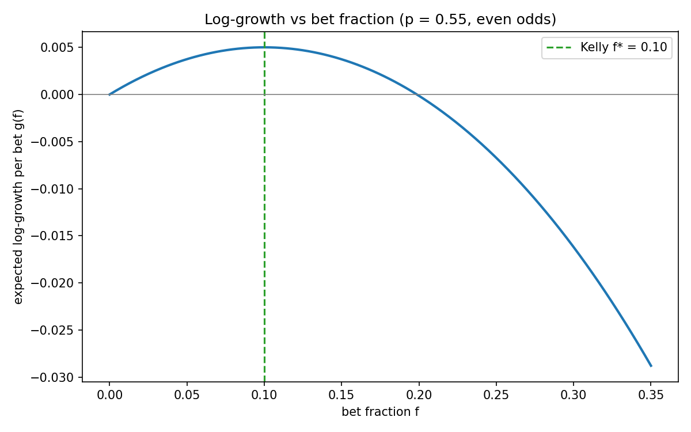
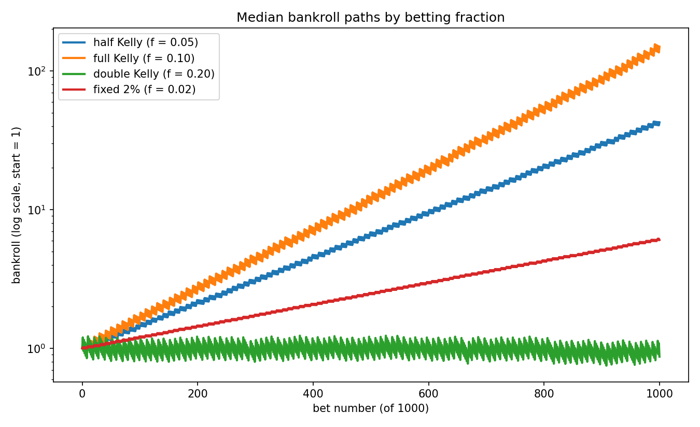
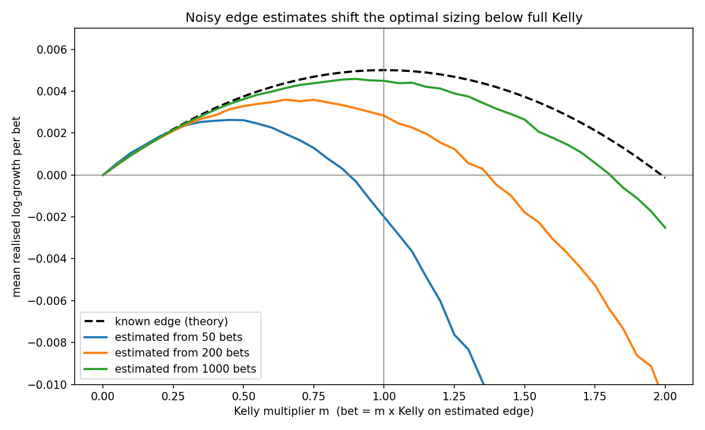
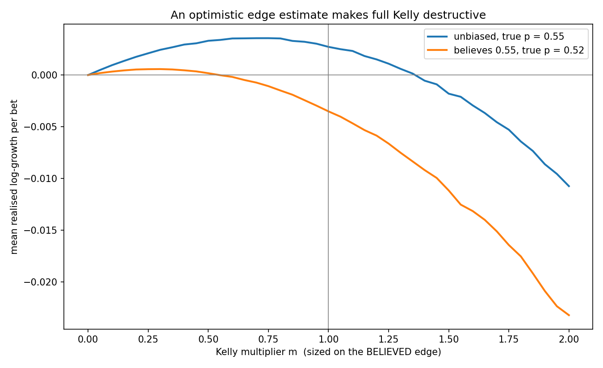
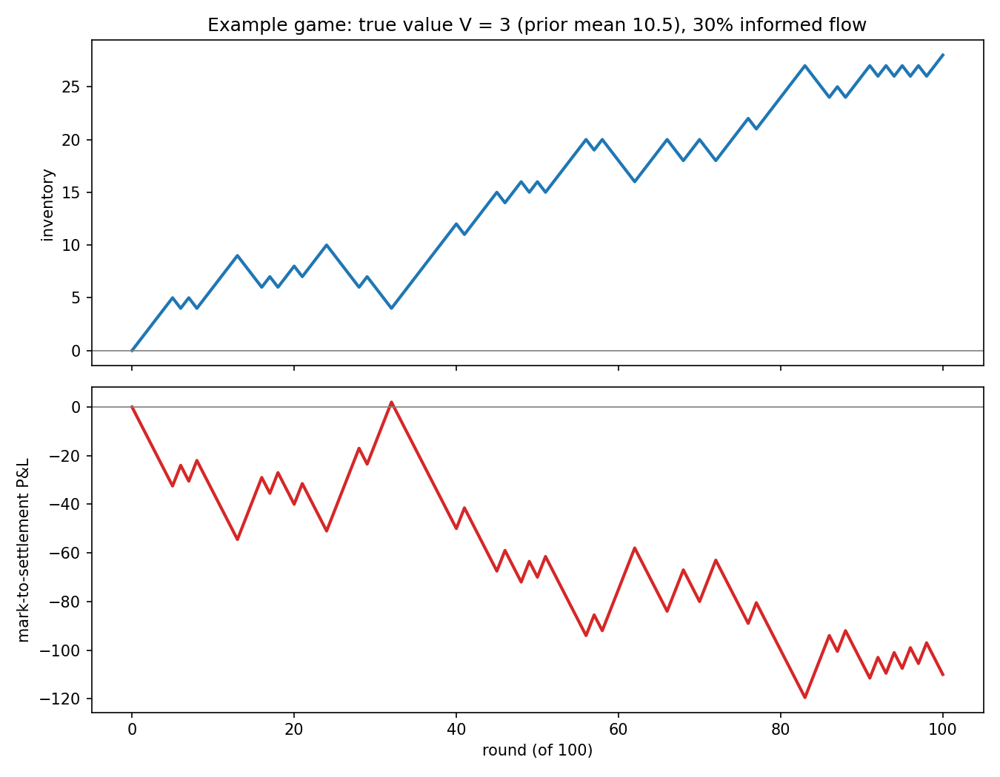
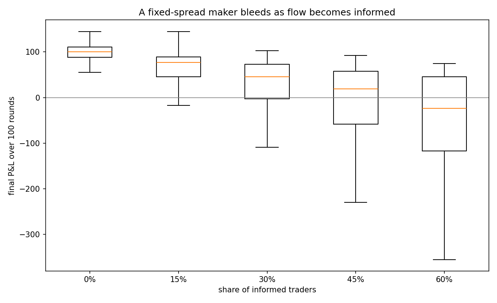
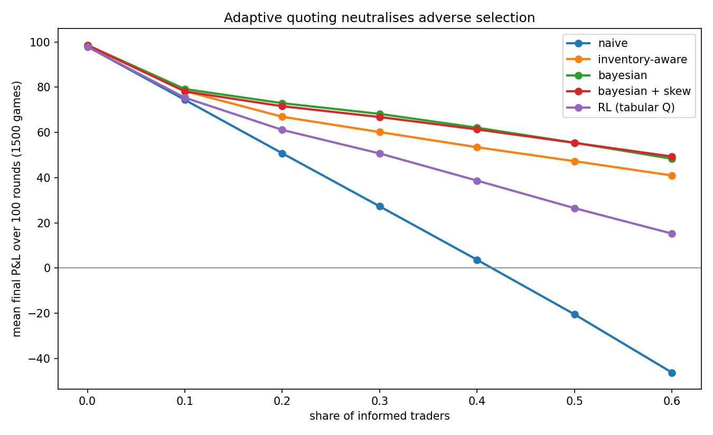
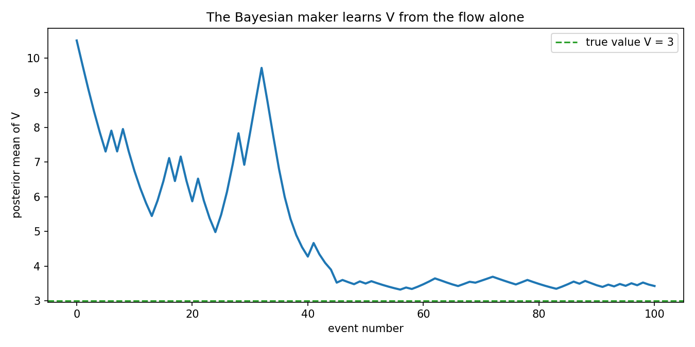
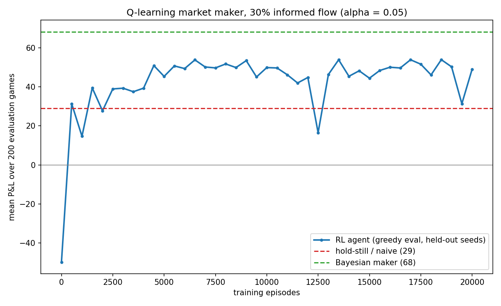

Abstract
This project studies two connected problems in quantitative decision-making. The first is bet sizing: given a repeated favourable bet, what fraction of wealth should be staked, and how does the answer change when the bettor’s edge is estimated rather than known? The second is market making: how should a dealer quote bid and ask prices for an asset of unknown value when some counterparties are better informed, and can a model-free reinforcement-learning agent recover a good quoting policy from the order flow alone? All results are produced by Monte Carlo simulation in Python (numpy), with a fully unit-tested codebase (40 tests) and reproducible, seeded experiments. Headline findings: (i) estimation noise and bias push optimal bet sizing materially below full Kelly, quantifying the practitioner’s preference for fractional Kelly; (ii) a fixed-spread market maker’s losses to informed flow are structural, not unlucky, and a Bayesian maker that treats every fill and every pass as evidence remains profitable even when 60% of traders are informed; and (iii) a tabular Q-learning agent observing only four coarse features recovers roughly half of the performance gap between a never-adapting maker and the full-information Bayesian benchmark.
Motivation
Both halves of the project are simplified models of real trading problems. Position sizing under estimated edges is the daily reality of any systematic strategy: backtests yield estimates, not truths, and the asymmetry of compounding means the cost of over-sizing exceeds the benefit of equivalent under-sizing. Market making against potentially informed flow is the canonical microstructure problem [Glosten & Milgrom, 1985]: the act of being traded with is itself information, because informed counterparties select when to trade. The project builds both models from first principles, verifies theory by simulation, and finishes by asking whether the market-making insight can be learned rather than derived.
Section 1: Bet sizing
The Kelly criterion with a known edge
For a binary bet with win probability \(p\), loss probability \(q = 1-p\), and net fractional odds \(b\) (a winning one-unit stake returns \(b\) units of profit), betting a fixed fraction \(f\) of bankroll each round gives an expected log-growth per bet of
\[ g(f) = p\,\ln(1 + bf) + q\,\ln(1 - f). \]
Maximising \(g\) yields the Kelly fraction
\[ f^\* = \frac{bp - q}{b}, \]
which for the study’s canonical bet (\(p = 0.55\), even odds \(b = 1\)) gives \(f^\* = 0.10\).
Simulating 20,000 bankroll paths over 1,000 bets:
| Strategy | Median final bankroll | Mean final bankroll | P(losing >50%) |
|---|---|---|---|
| Fixed 2% | 6.05 | 7.41 | 0.000 |
| Half Kelly (\(f=0.05\)) | 42.6 | 142 | 0.003 |
| Full Kelly (\(f=0.10\)) | 150 | 15,006 | 0.037 |
| Double Kelly (\(f=0.20\)) | 0.87 | 23.9M | 0.457 |
Three observations. Full Kelly maximises median growth, as theory predicts. Double Kelly sits almost exactly at the zero-growth crossing of \(g(f)\): its median path goes nowhere while its mean explodes, because the mean of a multiplicative process is dominated by a vanishing set of lucky paths — a concrete demonstration that expected wealth is the wrong objective for compounded betting. And half Kelly concedes surprisingly little growth for a large reduction in drawdown risk, foreshadowing the next result.


Kelly with an estimated edge
Real bettors estimate \(p\). The study models a bettor who observes \(n\) historical outcomes, forms the sample win rate \(\hat p\), and bets \(m \times f^\*(\hat p)\) — a Kelly multiplier \(m\) applied to the Kelly fraction of the estimate — against the true \(p\).
Noise. Sweeping \(m\) for several history lengths, the growth-maximising multiplier falls as the estimate degrades:
| Estimate quality | Best multiplier | Growth at best |
|---|---|---|
| Known edge (theory) | 1.00 | 0.00501 |
| Estimated from 1,000 bets | 0.90 | 0.00459 |
| Estimated from 200 bets | 0.65 | 0.00360 |
| Estimated from 50 bets | 0.45 | 0.00263 |
Bias. A bettor who believes \(p = 0.55\) when the truth is \(0.52\) — three points of overconfidence, easily produced by backtest overfitting — realises negative growth (\(-0.0035\) per bet) at full Kelly on the believed edge, while \(m \approx 0.3\) remains profitable.
The mechanism is the asymmetry of \(g(f)\) visible in the growth-curve figure: errors that push \(f\) beyond the peak cost more than equal errors short of it, so uncertainty shifts the optimum toward conservatism. This is the quantitative content of the practitioner’s rule “bet fractional Kelly.”


Section 2: Market making against informed flow
The game
A hidden value \(V\) is the sum of three dice (\(V \in \{3,\dots,18\}\), mean \(10.5\)). Each round a market maker quotes a bid and an ask; one trader arrives. With probability \(1-\phi\) the trader is a noise trader who buys or sells at random; with probability \(\phi\) they are informed, observing \(V + \varepsilon\) with \(\varepsilon \sim \mathcal N(0, \sigma^2)\), buying if their signal exceeds the ask, selling if below the bid, and passing otherwise. All positions settle at \(V\) after 100 rounds.
The maker’s economics decompose cleanly: noise traders pay the half-spread on every fill regardless of price level (revenue), while informed traders fill only when the quotes are wrong, transferring the mispricing to themselves (cost). This selective participation is adverse selection, and it is asymmetric in a way the simulation makes vivid: informed traders are absent from the fill stream precisely when the maker is priced correctly.
The cost of not listening
A naive maker quoting a fixed \(\pm 1.0\) spread around the prior mean, across 2,000 games:
| Informed share | Mean P&L | Median P&L | P(loss) |
|---|---|---|---|
| 0% | 98.4 | 100.0 | 0.005 |
| 30% | 27.7 | 45.5 | 0.255 |
| 60% | -48.4 | -24.0 | 0.533 |
In the example game plotted below, \(V = 3\) — far below the prior — and informed traders sell into the maker’s bid for the entire game while it never updates. The loss is structural.


Strategies that listen
Two upgrades were implemented and raced on identical market conditions:
- Inventory-aware: quote centre \(= 10.5 - \kappa \times\) inventory. Position control with no learning.
- Bayesian: a discrete posterior over \(V\), updated after every event using the game’s known structure. The likelihoods are, for candidate value \(v\) and quotes \((\text{bid}, \text{ask})\):
\[ \begin{aligned} P(\text{buy} \mid v) &= \tfrac{1-\phi}{2} + \phi\,\Pr(v + \varepsilon > \text{ask}) \\ P(\text{sell} \mid v) &= \tfrac{1-\phi}{2} + \phi\,\Pr(v + \varepsilon < \text{bid}) \\ P(\text{pass} \mid v) &= \phi\,\Pr(\text{bid} \le v + \varepsilon \le \text{ask}) \end{aligned} \]
Noise traders never pass, so a pass is pure signal that \(V\) lies inside the spread — an observation with no analogue in fill-only models, and one the convergence figure shows the maker exploiting.
Tournament results (1,500 games per point):
| Informed share | Naive | Inventory-aware | Bayesian |
|---|---|---|---|
| 0% | 98.0 | 98.4 | 98.6 |
| 30% | 27.3 | 60.2 | 68.2 |
| 60% | -46.2 | 41.0 | 48.4 |
The same flow that bleeds the naive maker funds the Bayesian one with information.


Section 3: A reinforcement-learning market maker
Problem formulation
The scientific question: can a model-free agent, denied the game’s structure (\(\phi\), \(\sigma\), even the existence of informed traders), learn a quoting policy from experience? Because \(V\) is hidden, the problem is a partially observable MDP; the theoretically sufficient state is the belief distribution over \(V\), which is exactly what the Bayesian maker tracks. The agent is instead given a deliberately crude, hand-crafted summary of history:
- flow imbalance (buys minus sells so far) — the human player’s “which side keeps getting hit” signal;
- quote-centre offset from the prior — without which imbalance is uninterpretable, since it cannot be known whether the imbalance has already been responded to;
- inventory — settlement risk;
- a coarse game clock — early rounds reward information gathering, late rounds punish open positions.
Each feature is discretised (bins \(7 \times 7 \times 5 \times 3\)), and the action space is five discrete quote-centre moves \(\{-1.0, -0.5, 0, +0.5, +1.0\}\) at a fixed \(\pm 1.0\) spread. The reward is the per-fill mispricing (\(\text{ask} - V\) on a sale, \(V - \text{bid}\) on a purchase), which telescopes exactly to the settled P&L — a property pinned by a unit test. \(V\) appears in the reward computation during training but never in the observation: the standard training-signal/input distinction.
Algorithm
Tabular Q-learning [Watkins, 1989]: maintain \(Q(s,a)\), and after each transition \((s, a, r, s')\) update
\[ Q(s,a) \leftarrow Q(s,a) + \alpha\left[r + \gamma \max_{a'} Q(s',a') - Q(s,a)\right], \]
with \(\gamma = 1\) (episodic task, monetary reward), \(\varepsilon\)-greedy exploration decaying \(1.0 \to 0.05\) over 60% of training, and terminal states bootstrapping zero. Q-learning is off-policy: the update targets the greedy policy’s value even while behaviour is exploratory.
Evaluation discipline was enforced throughout: greedy-policy evaluation on held-out seed blocks disjoint from training seeds; best-checkpoint selection (motivated below); and final reporting on a third seed block untouched by either training or selection.
Results
A first 20,000-episode run with constant \(\alpha = 0.1\) exhibited the characteristic instability of tabular Q-learning: evaluation oscillated between \(\approx 48\) and \(\approx 18\), and the final-episode snapshot happened to score 20.7 — a bad snapshot of a decent agent. Halving \(\alpha\) and keeping the best evaluated checkpoint produced a stable plateau and a final score of 49.2 over 1,000 fresh held-out games, against a hold-still benchmark of \(\approx 29\) and the Bayesian ceiling of \(\approx 68\): roughly half the naive-to-Bayesian gap recovered from four coarse features. State coverage was 29% of bins; most extreme feature combinations are unreachable in 100-round games.

Entered in the tournament via a thin adapter (the frozen table wrapped in the MarketMaker interface, reconstructing its observation from its own fill stream), and noting the agent was trained only at \(\phi = 0.3\):
| Informed share | Naive | Inventory-aware | Bayesian | RL (tabular Q) |
|---|---|---|---|---|
| 0% | 98.0 | 98.4 | 98.6 | 97.9 |
| 30% | 27.3 | 60.2 | 68.2 | 50.7 |
| 60% | -46.2 | 41.0 | 48.4 | 15.3 |
The agent beats the naive maker everywhere and remains profitable at 60% informed flow, where the naive maker loses heavily. It does not overtake the hand-designed inventory-aware heuristic: at this scale of state space and training budget, a good inductive bias is hard to out-learn. Its out-of-distribution decay (trained at 30%, weaker at the extremes) is visible and expected.
Discussion and limitations
Three threads tie the sections together. First, information asymmetry has a price and a location: in the betting studies it appears as the cost of acting on estimates as if they were truths; in market making it appears as adverse selection. Second, the asymmetry of losses dictates conservatism: the concavity of log-growth and the one-sidedness of informed flow both mean errors are not symmetric, so optimal behaviour backs away from the frictionless optimum. Third, listening is worth money: the gap between the naive and Bayesian makers, and the RL agent’s ability to close half of it from crude features, are both measurements of the value of information in the order flow.
Limitations, stated plainly: the game is stationary within an episode (no news, no drifting \(V\)); trader arrival is one-per-round with unit size; the Bayesian maker is given the true \(\phi\) and \(\sigma\), making its benchmark a ceiling rather than a fair competitor; the RL agent’s features are hand-crafted, its discretisation coarse, and it was trained at a single informed share. The betting studies assume binary independent bets; correlated simultaneous bets (portfolio Kelly) remain on the roadmap.
Future work
Policy inspection (heatmaps of the learned greedy action over imbalance-by-centre slices, compared with the Bayesian maker’s behaviour); ablations (sparse versus dense reward; removing the flow-imbalance feature, which should collapse the agent to inventory management); a DQN on the identical environment via stable-baselines3, relaxing the discretisation; an adaptive Bayesian maker that infers \(\phi\) online; and the portfolio Kelly extension connecting Section 1 to multi-asset allocation.
Reproducibility
All experiments are seeded scripts in scripts/; all figures in this document are their direct outputs. The full test suite (40 tests) runs with python -m pytest. Code: github.com/jacksonfraser-aero/kelly-betting-simulator.
References
- Kelly, J. L. (1956). A New Interpretation of Information Rate. Bell System Technical Journal.
- Thorp, E. O. (2006). The Kelly Criterion in Blackjack, Sports Betting, and the Stock Market.
- MacLean, L., Thorp, E. O., & Ziemba, W. (2011). The Kelly Capital Growth Investment Criterion. World Scientific.
- Glosten, L., & Milgrom, P. (1985). Bid, Ask and Transaction Prices in a Specialist Market with Heterogeneously Informed Traders. Journal of Financial Economics.
- Watkins, C. (1989). Learning from Delayed Rewards. PhD thesis, Cambridge.
- Sutton, R., & Barto, A. (2018). Reinforcement Learning: An Introduction (2nd ed.). MIT Press.